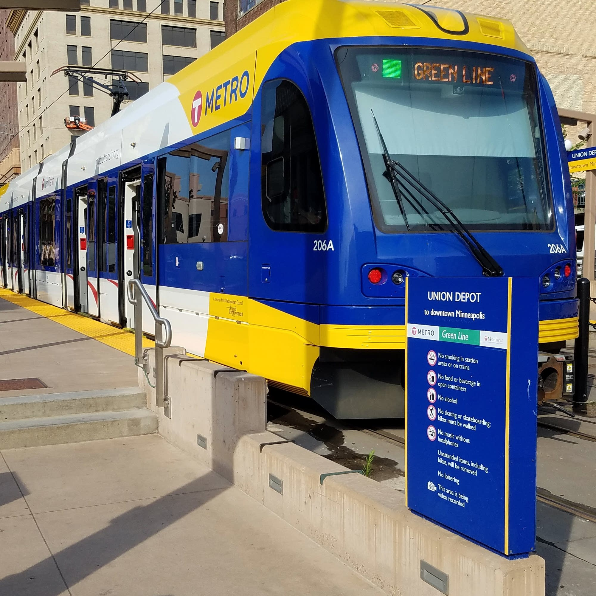

My name is Todd McCoy

If at all possible I prefer using Metro Transit.
I live close to the Green Line Train and A Line bus.
Because of that proximity I am able to get around quite easily given time to plan.
I am very happy that Prime campus is close to a Green Line stop becuase parking downtown is a royal pain.